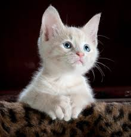
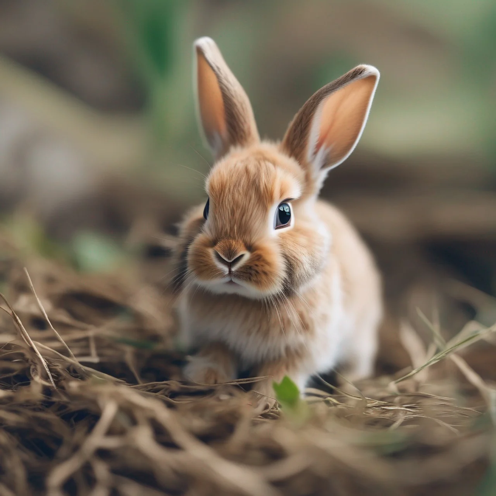

Pisica
Pisica de casă, pisica domestică sau mâța este un mamifer din
ordinul carnivorelor, familia Felidae, subfamilia Felinae. Este alături de oameni de peste 9500 ani și
în
prezent este cel mai cunoscut animal domestic în toată lumea. Pisica domestică este foarte apropiată de
pisica sălbatică europeană (Felis silvestris silvestris), ca și de pisica sălbatică africană (Felis
silvestris libyca), împreună formând o specie unică: Felis silvestris.

Câinele
Câinele este un descendent domesticit al lupului.
Denumit și câine domestic, acesta provine din lupii cenușii din Pleistocen astăzi dispăruți.
Câinele a fost prima specie domesticită de către om. Experții estimează că vânătorii-culegători au
domesticit câinii cu peste 15.000 de ani în urmă, înainte de dezvoltarea agriculturii.Datorită
asocierii lor îndelungate cu oamenii, câinii s-au extins la un număr mare de indivizi.

Iepurele
Termenul de iepure desemnează mamiferele cu urechi lungi din familia Leporidae, ordinul Lagomorpha.
Acestea se clasifică în 2 categorii: cei care nasc pui acoperiți cu blană și cu ochii deschiși
reprezentant tipic este iepurele de câmp și cei puii cărora se nasc golași și orbi
reprezentant tipic este iepurele de vizuină . Din punct de vedere genetic cele
două specii sunt complet diferite și nu se pot înmulți între ei.